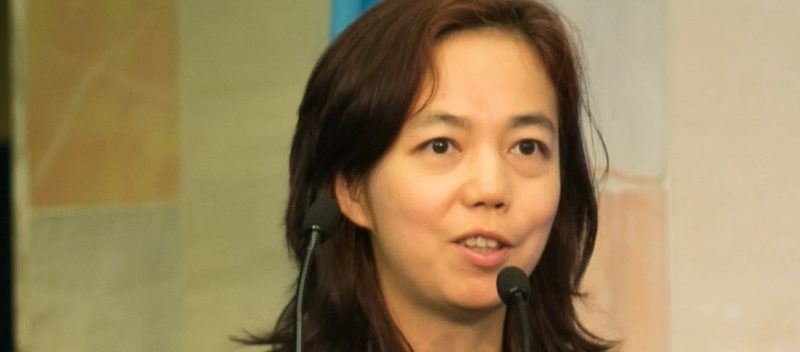
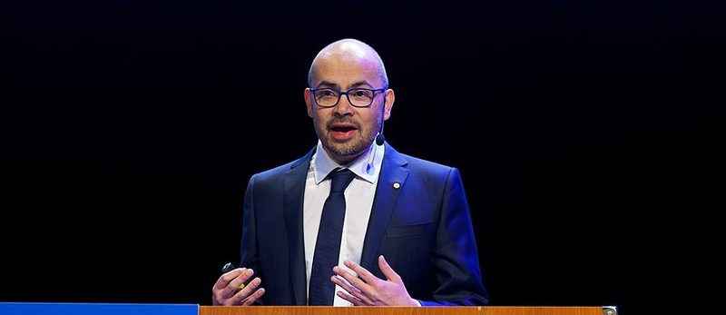

A chipmaker buys a world-model lab, and drug design gets a $5 billion check
Two of the list's best-known researchers closed the biggest transactions of the day, one by selling to a chip company and one by raising from the venture firms.
World Labs joins AMD @drfeifei · executive vice president and chief scientist, AMD · @LisaSu · chair and CEO, AMD
The deal closed on Nov. 13, and AMD issued 14,978,322 shares to World Labs' former stockholders, according to an amended 8-K filed Monday. The announcement says World Labs builds models that "create and simulate interactive 3D environments," plus tools for robot learning and simulation, and that its team will keep doing foundational research while helping shape AMD's future hardware and software. Su said that building infrastructure for "the next era of superintelligence requires us to optimize compute platforms and models together."
Su posted at 9:29am EST: "Welcome @drfeifei and @theworldlabs team to @AMD! Super excited for all we will accomplish together." Li answered that "there is so much ahead of us to create the best technologies to benefit everyone," and later quoted AMD's own welcome post:
"AI is a civilizational technology! I'm deeply grateful and excited by the opportunities and responsibility awaiting all of us! Leading @theworldlabs for the past 2+ years has been an honor of my life. I cannot wait to continue working with this incredible team of innovators and scientists, and also to embark on this new chapter with all the colleagues at @AMD!"



Isomorphic Labs raises $5 billion @demishassabis · CEO, Google DeepMind and Isomorphic Labs
Isomorphic's announcement says the Series C was co-led by Greenoaks and Sequoia Capital with Andreessen Horowitz and other new investors, "continued significant investment from Alphabet," and every existing backer: Thrive Capital, MGX, GV, CapitalG, Temasek and the UK Sovereign AI Fund. The money goes into its proprietary drug design engine, IsoDDE, and a pipeline of drug candidates designed with AI. Hassabis spun Isomorphic out of DeepMind in 2021 and shared the 2024 Nobel Prize in Chemistry for AlphaFold's protein-structure predictions.
"Thrilled to announce $5B in funding for @IsomorphicLabs to accelerate our mission to Solve All Disease. We continue to make rapid progress reimagining drug design from first principles with AI to radically cut the time & cost to find new medicines. Gradually, then all at once..."



Counting the demand @elonmusk · @levie · CEO, Box · @paulg · co-founder, Y Combinator
A clip of Sam Altman, who did not post in the window, circulated in which he said chipmakers are each assuming OpenAI will buy their output: "There are now many people making chips. And many of those people think they're going to sell most of the volume to us and Anthropic and others." He added that "the data center build out, that stuff is solid. But we're not all gonna be able to or need to buy every… all of our supply from every chip vendor." Musk replied at 8:08am EST: "SpaceX is assuming zero sales to OpenAI. If OpenAI is not seeing demand rising super fast, then something is wrong with their products."
Aaron Levie pointed to spending instead. Ramp data showed the top 1% of US businesses by AI spend put a record $10,199 per employee into AI in October, more than triple January's level. Levie wrote that the chart "still has no ceiling in sight," that "coding, in retrospect, was basically trash even 12 months ago," and that agent swarms and background agents "are going to eat up vastly more tokens than anything we can imagine." Paul Graham looked at an updated METR chart of how long a task AI agents can finish: "If this is real, this is stupendously fast growth."